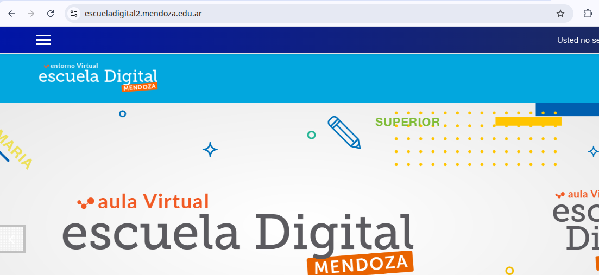
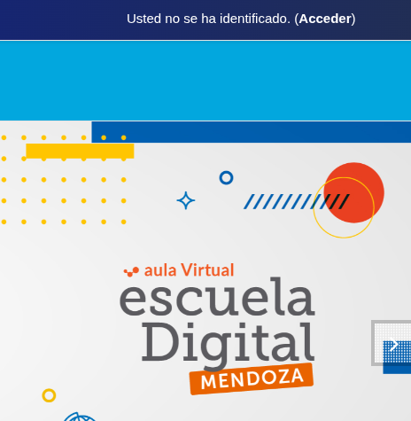
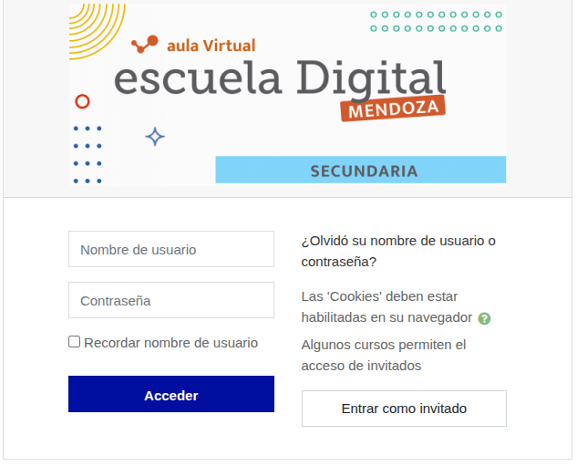
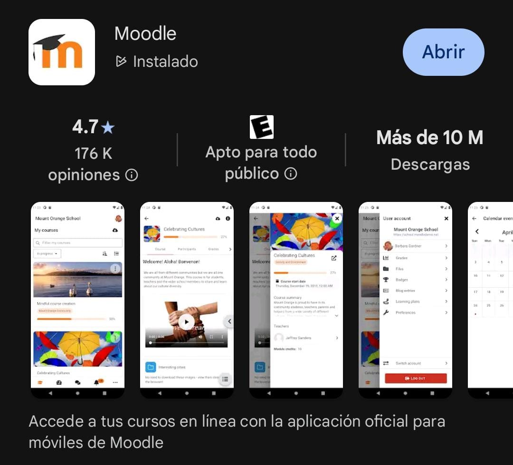
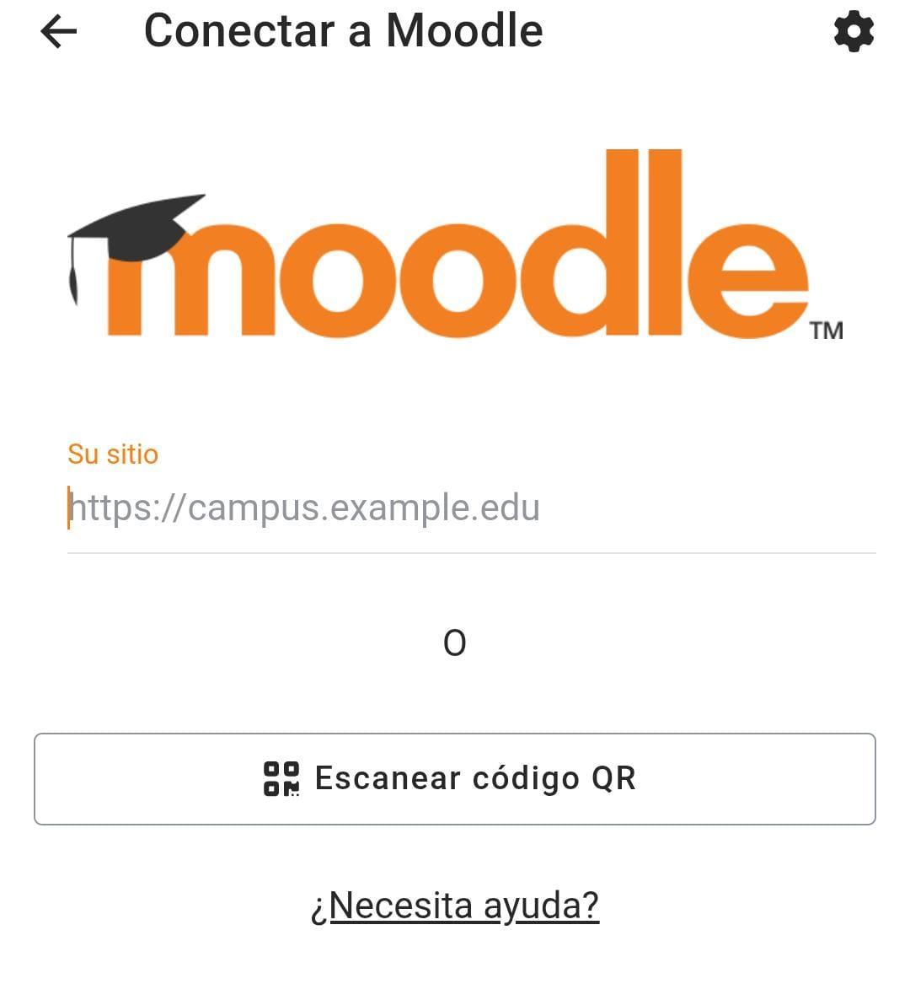

Guía de Acceso a la Plataforma Escuela Digital Mendoza
Esta guía te ayudará a ingresar a la plataforma Escuela Digital Mendoza, un espacio virtual para aprender y enseñar. A continuación, encontrarás los datos que necesitas y las dos formas de acceder.
Usuario: Tu número de DNI (sin puntos).
Contraseña: Tu número de DNI (sin puntos).
Paso 1: Abrir el navegador
Abre tu navegador de internet (Chrome, Firefox, etc.) y escribe la siguiente dirección:
escueladigital2.mendoza.edu.ar

Paso 2: Acceder
En la esquina superior derecha de la página, haz clic en el enlace que dice "Acceder".
Paso 3: Ingresar tus datos
Completa los campos con tu DNI (sin puntos) para "Nombre de usuario" y "Contraseña". Luego, presiona "Acceder".
Paso 1: Instalar la App
Busca e instala la app oficial "Moodle" desde la tienda de tu celular.
Paso 2: Conectar con el sitio
Al abrir la app, te pedirá la dirección del sitio. Escribe:
escueladigital2.mendoza.edu.ar
Luego, presiona "Conectar a su sitio".
Paso 3: Ingresar tus datos
Al igual que en el navegador, usa tu DNI (sin puntos) para el usuario y la contraseña. ¡Listo, ya estás dentro!
Primero, verifica que estés escribiendo tu número de DNI correctamente, sin puntos ni espacios. Si el problema continúa, es posible que tu usuario no esté activado.
Asegúrate de tener una buena conexión a internet. Si usas la app, comprueba que esté actualizada a su última versión. Si el problema persiste, intenta acceder usando el otro método (si usas la app, prueba con el navegador, y viceversa).
Para cualquier otra consulta o si los problemas de acceso persisten, por favor acércate al sector de informática de la escuela. Allí te podremos ayudar a solucionarlo.